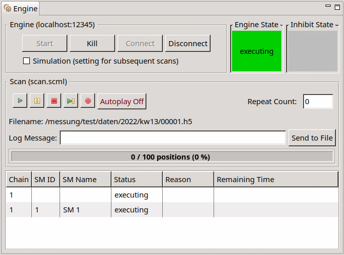
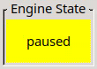

The Engine View allows monitoring and control of scans running in an engine process.

It is divided into an Engine group for the engine process, Scan group for the currently loaded scan with Status Table and State indicators for Engine and Inhibit state.
Following the Engine text label the host and port of the engine process connected to (if any) is shown inside of brackets. Depending on the connection state, several other areas are enabled/disabled.
Inside the engine group there are buttons to control the engine process. Their function is described in the table below:
| Button | Description |
|---|---|
| Start | Creates an engine process with the parameters (i.e. host and port) specified in the preferences and connects to it. |
| Kill | Sends a request to the engine to terminate itself. |
| Connect | Connects to an existing engine process at host:port as specified in the preferences |
| Disconnect | Disconnects from the currently connected engine process. |

If a scan is currently loaded in the engine the controls inside the scan group become active and the name of the loaded file is shown as a suffix of the Scan label of the group.
Several buttons are available to influence the execution of a scan. Their function is described in the table below:
| Button | Description |
|---|---|
| Play | Starts (or continues a paused) scan. |
| Pause | Pauses the scan. |
| Stop | Stops the scan after finishing the current scan point. While pending positionings are ignored, post scan actions of the current scan module (and the parents if nested) are still executed. |
| Skip | Finishes the current scan point, skips the remaining scan points of the current scan module, executes post scan actions and continues with the next scan module (if any) |
| Halt | Stops the scan and immediately stops all motor axes. |
| AutoPlay | if activated (toggle button) loaded scans (and iterations if repeat count > 0) start automatically |
TODO Play Button
Besides the available buttons there are some status fields as well as options to repeat the currently loaded scan and add comments to it. See details below:
The Repeat Count displays the number of times the scan should be repeated. As long as the scan is not finished the repeat count is editable.
Shows the path and name of the file the measuring data is written to.
Allows writing (multiple) comments to the current data file. When pressing the button “Send to File” the entered text is send to the engine (which saves it in the file with a timestamp).
Shows the progress of the current scan by showing the absolute and relative ratio of finished positions to the number of total positions. The background color fill also represents the relative ratio.
Shows the chains, scan modules and their states of the currently loaded scan. A remaining time as well as additional event information (if any) are also shown.
| state | Description |
|---|---|
|  | |
| state | Description |
|---|---|
 | |
 | |
TODO Tooltip
% TODO
Any client connected to an engine executing a scan which currently is paused due to an inhibit state evaluated to true, can override that state by pressing the Play-Button. Any pause condition which evaluated to true is now in an overridden state as long as it becomes false again. If there are only false and overridden pause conditions the chain resumes execution.
Keep in mind, that by pressing the pause button, the whole scan is paused, i.e. each chain is paused. The user pause overrules any inhibit states. A scan paused by the user can only be resumed by pressing the Play-Button (even if all pause conditions suddenly evaluate to false).